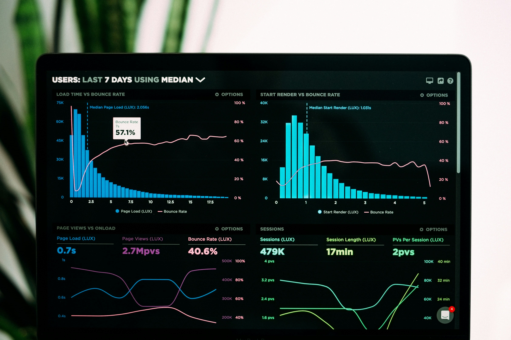

Desarrollo de aplicaciones con shiny
Transforma tus análisis en aplicaciones web reactivas diseña, desarrolla y despliega con Shiny

¿Qué es Shiny?
Hasta hace poco tiempo, cuando un analista deseaba convertir sus modelos o análisis en una aplicación web, necesitaba colaborar estrechamente con un desarrollador web. Este proceso solía ser largo y tedioso, lleno de constantes intercambios hasta clarificar y concretar las ideas en una aplicación funcional.
Shiny es una herramienta gratuita y de código abierto que empodera a los analistas para crear aplicaciones web reactivas, elegantes y eficaces utilizando el lenguaje de programación que ya dominan. Con Shiny, puedes pasar rápidamente de tu idea a una aplicación totalmente funcional, aprovechando al máximo los recursos y códigos que ya has desarrollado. Para aprender más sobre Shiny y cómo puede transformar tu análisis en aplicaciones web interactivas, visita su sitio web oficial.
Este curso está diseñado para desarrolladores y entusiastas que deseen aprender a crear aplicaciones web interactivas utilizando Shiny, una poderosa herramienta para R. A lo largo de este curso de 6 semanas, explorarás los fundamentos de la programación reactiva y la integración de mapas y gráficos interactivos, así como el despliegue eficiente de aplicaciones en shinyapps.io. Desarrollarás aplicaciones clave que no solo exhibirán tus habilidades técnicas, sino también tu capacidad para manejar y presentar datos de manera efectiva.
¿Qué aprenderás?
- Fundamentos de Shiny y programación reactiva: Introducción a los conceptos básicos de Shiny y cómo manejar la interactividad en aplicaciones web.
- Integración de mapas y gráficos interactivos: Aprenderás a visualizar datos de manera dinámica utilizando bibliotecas como Leaflet para mapas y Plotly para gráficos.
- Despliegue en shinyapps.io: Adquirirás habilidades para publicar y gestionar aplicaciones en la plataforma de hospedaje de Shiny, shinyapps.io.
- Desarrollo de aplicaciones específicas:
- App de Encuestas: Conecta tu aplicación con Google Sheets para recopilar y analizar datos de encuestas.
- Monitor de precios para ferreterías: Crea una aplicación que monitoriza y compara precios de la competencia en tiempo real.
- Comparador de precios de alquileres: Desarrolla una aplicación para evaluar y encontrar las mejores opciones de alquiler en el mercado.
- Automatización y actualización de datos con GitHub Actions: Utiliza GitHub Actions para automatizar la extracción, limpieza e integración de datos, manteniendo tus aplicaciones actualizadas.
- Gestión de bases de datos SQL con Supabase: Aprende a integrar y manipular bases de datos en SQL utilizando Supabase, una plataforma de backend como servicio que facilita el manejo de datos en la nube.
Próxima apertura
- Fecha: miércoles 3 de julio de 2024
- Lecciones: Todos los miércoles
- Costa Rica/México: 2:00 p.m.
- Colombia: 3:00 p.m.
- Argentina: 5:00 p.m.

¿Qué obtendrás?
- 6 clases en vivo de 2 horas cada una.
- Sesión semanal privada de 30 minutos con el instructor para retroalimentación personalizada.
- Asistencia por correo electrónico y consultas en tiempo real vía Zoom.
- Certificado de aprovechamiento compatible con LinkedIn, emitido por Certifier.
- Acceso prioritario a cursos avanzados.
- Precio: $99 USD
Conoce al instructor
Mi nombre es Carlos Agüero B, desde el 2016, me dedico a enseñar a profesionales, en su mayoría no programadores, cómo analizar datos utilizando el lenguaje R.
He tenido la increíble oportunidad de formarme como instructor certificado por RStudio para la enseñanza de Tidyverse y Shiny y, recientemente, unirme la comunidad de instructores de The Carpentries. En estos 8 años de experiencia, he impartido más de 70 cursos relacionados con el lenguaje R a más de 400 estudiantes a lo largo de toda América Latina.
Si tienes dudas conversemos:
Puedes programar una üé• videollamada de 15 minutos con el instructor para revisar tus dudas sobre el curso en el siguiente enlace.
Conoce lo que dicen nuestros estudiantes
Contenido del curso
Semana 1: Introducción a Shiny y estructura básica
- Introducción a Shiny y su importancia en el análisis de datos.
- Estructura básica de una aplicación Shiny: ui.R y server.R.
- Conceptos de reactividad en Shiny.
- Práctica: Construcción de una aplicación que muestre un texto y un gráfico simple basado en una entrada del usuario.
Semana 2: Layouts, temas y elementos HTML
- Diferentes layouts en Shiny: paneles, tabs, y grid layouts.
- Personalización con CSS y temas predefinidos.
- Uso de elementos HTML y etiquetas en aplicaciones Shiny.
- Práctica: Diseñar una aplicación con múltiples pestañas y un tema personalizado.
Semana 3: Visualización de datos avanzada
- Introducción a plotly para gráficos interactivos.
- Uso de leaflet para mapas interactivos.
- Práctica: Desarrollar una aplicación que muestre el precio de alquileres en Costa Rica con filtros dinámicos y mapas interactivos.
Semana 4: Manipulación de datos y UI dinámico
- Carga y manipulación de datos desde archivos Excel y CSV.
- Creación de componentes UI dinámicos.
- Introducción al bookmarking en Shiny para guardar estados de la aplicación.
- Práctica: Crear una aplicación para cargar datos, analizarlos y visualizar resultados de manera dinámica.
Semana 5: Módulos y bases de datos
- Diseño y uso de módulos en Shiny para reutilizar código.
- Conexión con bases de datos en la nube, ejemplificando con Supabase.
- Práctica: Desarrollar una aplicación que use módulos y se conecte a una base de datos en la nube para realizar operaciones CRUD (crear, leer, actualizar, borrar).
Semana 6: Proyecto final y despliegue
- Revisión de conceptos clave y mejores prácticas en Shiny.
- Despliegue de aplicaciones Shiny usando shinyapps.io.
- Práctica: Crear y desplegar un proyecto final que compare precios de productos entre diferentes supermercados.
Este programa proporcionará una base sólida en el desarrollo de aplicaciones web interactivas con R y Shiny, enfocándose en casos prácticos y aplicables en el mundo real.
Inscribirte ahora
- 6 clases en vivo de 2 horas cada una.
- Sesión semanal privada de 30 minutos con el instructor para retroalimentación personalizada.
- Asistencia por correo electrónico y consultas en tiempo real vía Zoom.
- Certificado de aprovechamiento compatible con LinkedIn, emitido por Certifier.
- Acceso prioritario a cursos avanzados.
- Precio: $99 USD.
Ponte en contacto
La comunidad de usuarios de R me ha permitido conectar con personas interesantes de todo el mundo, algo que valoro enormemente. Si tienes una idea de proyecto, especialmente si está relacionado con datos de Costa Rica, me encantaría ayudarte en lo que sea posible.
Para charlar o preguntar, escríbeme a carlos.aguero@aprendetidyverse.com. También puedes encontrarme en LinkedIn o en Twitter (sí, sé que ahora se llama X, pero me resisto a cambiarle el nombre; simplemente no me gusta). ¡Espero tu mensaje!